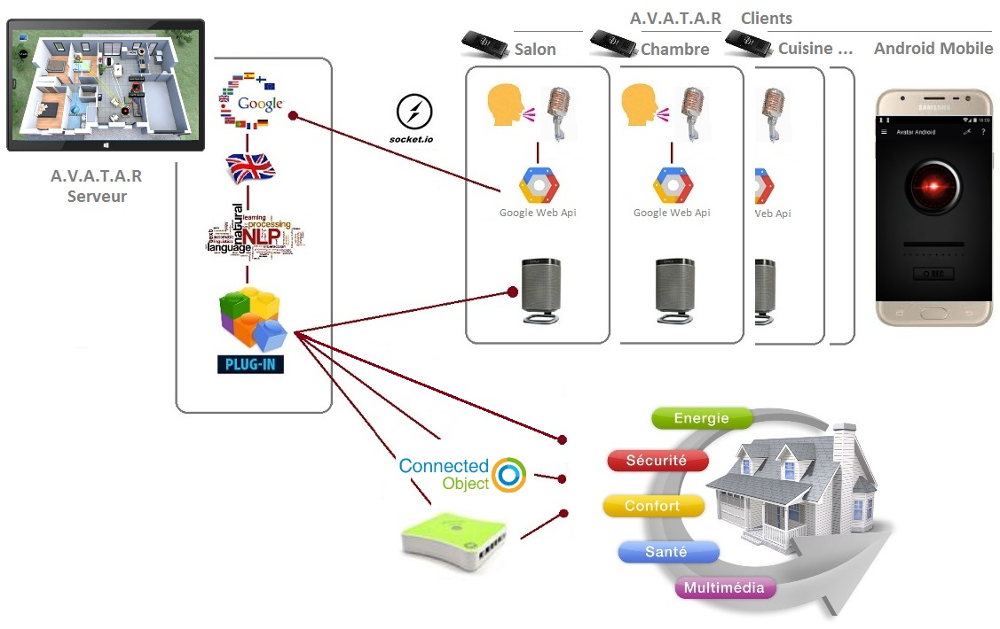

Préconisation d'installation
Avatar Serveur est optimisé pour fonctionner en mode tablette tactile, ce qui permet d'avoir toujours à disposition les informations affichées sur l'interface, les menus d'actions très utiles comme par exemple Activer/Désactiver l'écoute et les actions ou interfaces que certains plugins peuvent afficher.
Pour chaque client, on peut utiliser un miniPC Windows 10 peu chers (à un prix comparable à un raspberry PI, même moins cher...) pour chaque pièce que l'on veut contrôler. A noter que le PC serveur peut aussi recevoir un client pour la pièce dans laquelle il se trouve.

Bien sur, vous pouvez choisir de l'installer sur d'autres plateformes que sur une tablette ou des miniPC, rien n'est figé et tout est possible. Simplement, cette possibilité est intéressante en mode multirooms parce que très économique, fiable, très facile d'installation et d'utilisation. Un Stick Windows avec un micro et une enceinte, un client Avatar, c'est tout !
Indispensable à Avatar (enfin... chacun son choix...), une box domotique pour la gestion des périphériques domotiques, j'ai personnellement choisi une box eeDomus pour ses performances, son accès sécurisé y compris depuis n'importe quel endroit hors du domicile, les protocoles disponibles, sa qualité et la réaction des développeurs pour y inclure les derniers capteurs et la facilité de dialogue avec les objets connectés en utilisant des API REST.
Il existe aussi des applications de domotique freeware (gratuite) comme Jeedom ou Domoticz que vous pouvez installer sur Windows ou Linux.
Un conseil:
Des capteurs de présences dans chaque pièce pour qu'Avatar puisse toujours localiser l'endroit où vous êtes présent. Bien sûr, ce n'est pas indispensable (sauf pour un client mappé, voir plus loin dans la documentation du serveur pour ces termes) parce que vous pouvez aller plus loin que de demander l'heure à Avatar... :-)
Par exemple, il peut vous proposer de lui-même de vous communiquer des informations, comme lorsque votre programme télé favori est en train de passer ou encore s'il doit fermer les volets en vous posant la question et ca bien sûr seulement dans la pièce où vous vous trouvez et non pas partout dans toute la maison. Par conséquent, pour vous localiser, des capteurs de présences sont indispensables. Configurez alors votre box domotique pour qu'elle envoie une action HTTP à Avatar pour définir la pièce courante (voir la variable Avatar.currentRoom).
Créé avec HelpNDoc Personal Edition: Sites web iPhone faciles